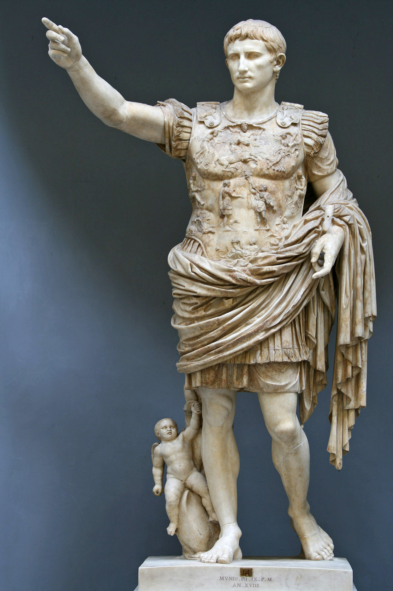
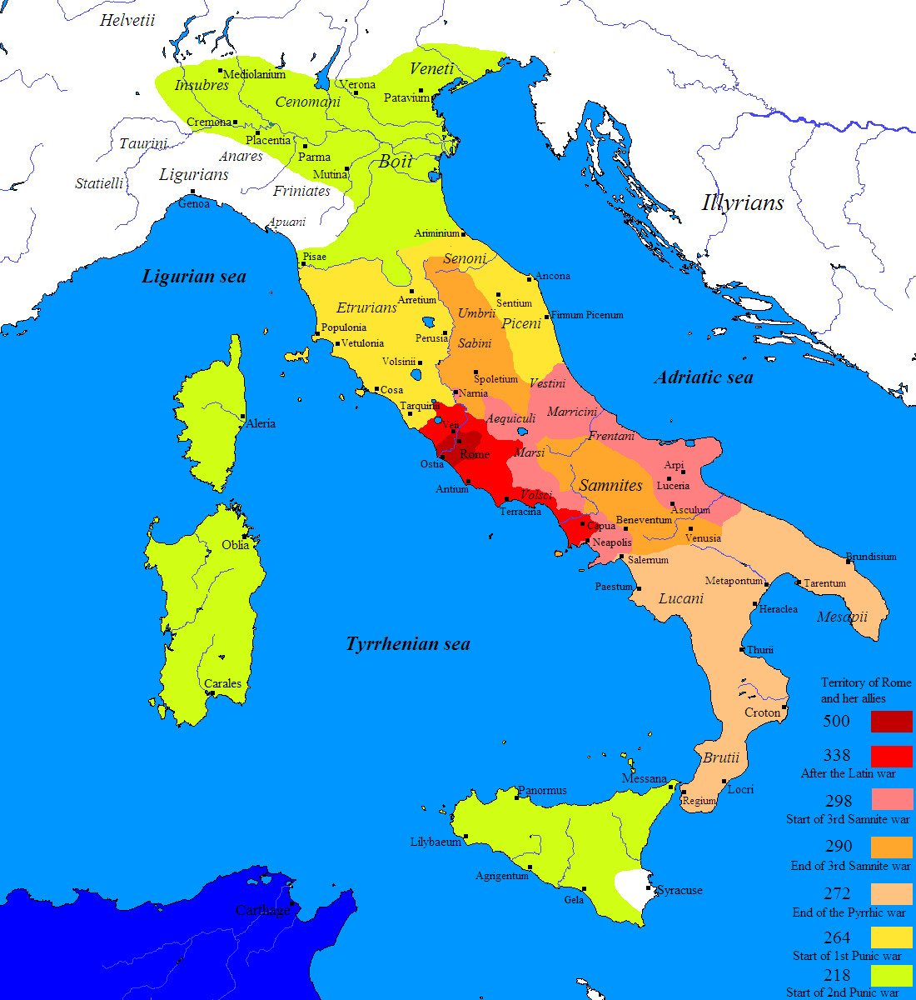
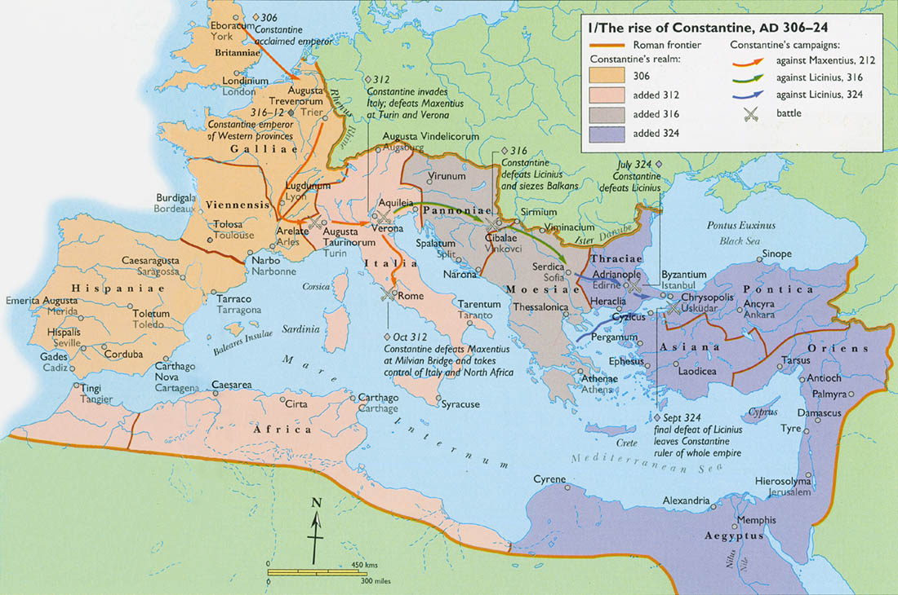
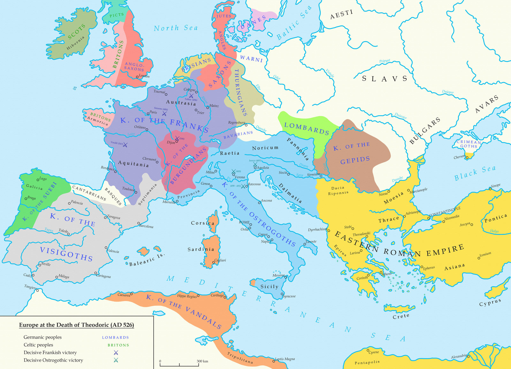
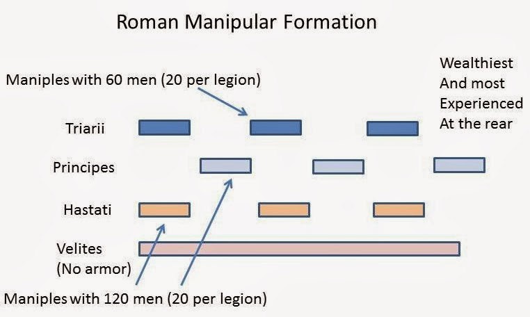
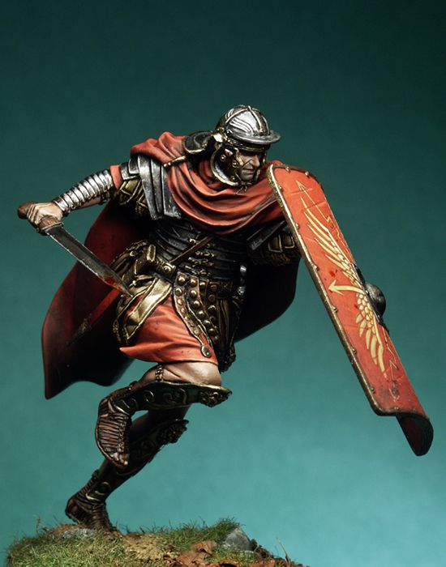
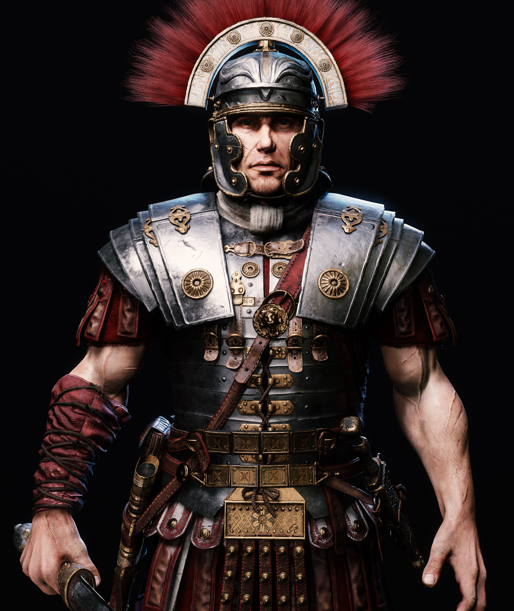
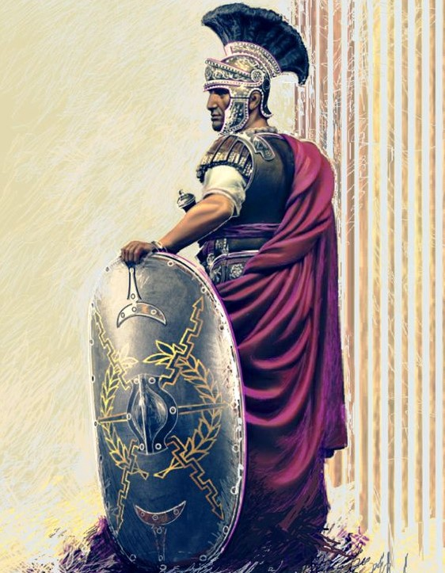
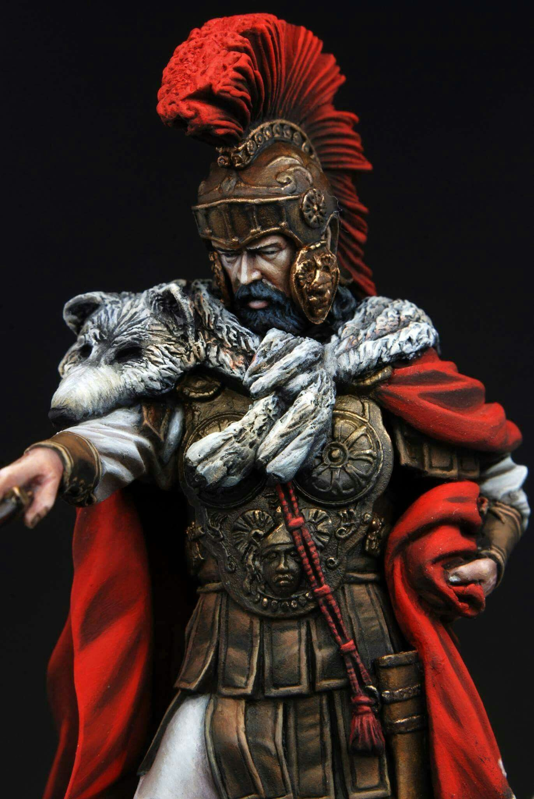

Statua prvog Rimskog cara Oktavijana Augusta.

Širenje Rima Apeninskim poluotokom.

Uspon cara Konstantina početkom 4.st.

Pad Zapadnog Rimskog carstva te uspostave barbarskih kraljevina.

Rimske manevarske formacije.

Prikaz legionara.

Prikaz centuriona.Prikaz Rimskog viteza.

Prikaz carskog stražara - pretorijanca.

Prikaz rimskog generala.